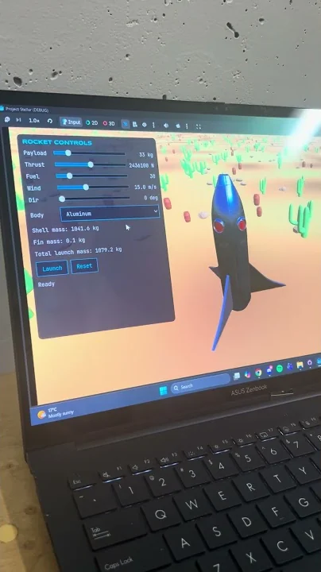

A 3D rocket-fin design simulator built in 24 hours. Shape the fins, pick materials, set payload, fuel and wind, then launch the rocket and see how stable it flies.
role
Physics and simulation programming
team
4 people
when
June 2026, Project Stellar (24-hour hackathon)
built with
Godot 4, GDScript
result
1st place overall and “Most Likely to Become a Startup”.

A frame from the demo video: the launch controls and the rocket on the pad.
what i did
Wrote the launch physics and the wind model that decide whether a design flies straight.
Built the fin-configuration system and the material database users pick from.
Wrote the camera tracking that follows the rocket in flight.
Made 30 of the team’s 66 commits.
how it works
A fin editor turns the shape you draw into surface area, span, root and tip chord and a shape factor, with live readouts of stability, drag penalty and fin mass.
Those values feed a simplified physics model with thrust, gravity, fuel burn, wind, drag, payload mass, material effects and fin stabilisation torque, so the design changes the actual flight.
The launch runs in a 3D desert scene with a dashboard for tilt, speed, stability and maximum height.
what went wrong
Scaling the rocket model up to look right broke the physics. We had to separate visual scale from physics scale, and keep the model simple enough to build in a day while fin shape, material, wind and payload still visibly mattered.